| Name | SRN |
|---|---|
| Sriya Yashita Chandu | PES2UG24CS523 |
| Srujan Yalla | PES2UG24CS527 |
| Tanmayee B G | PES2UG23CS552 |
| Tarun G K | PES2UG24CS557 |
A car's GPS log is never exactly on the road. Buildings, signal reflections and dropouts push the fixes 5 to 20 m away, and sometimes onto a parallel street. PathSnap has to take the noisy fixes of a trip and the road network around it, and work out which road segment (arc) the car was on at every fix, giving a route that is actually drivable.
We split the problem into two parts:
The trained pipeline runs behind a FastAPI server on Laptop 1. An evaluator UI on Laptop 2 sends it a
trip id and draws the returned route. Everything in this report can be reproduced from the repository, and
every number comes from a file in results/.
We received 90 trips: 80 in train and 10 in student_test. The evaluators kept another 10 for final testing. Each trip folder has four header-less, whitespace-separated text files:
| File | Columns | What it is |
|---|---|---|
.track | lon, lat, t (s) | GPS fixes, nominally 1 Hz |
.nodes | lon, lat | Road-network nodes; the row index is the node id |
.arcs | from, to | Directed road segments; the row index is the arc id. A two-way street is two arcs. |
.route | arc id | Reference route: the arcs the car used, in order |
| Partition | Trips | GPS fixes | Median fixes / trip | Median arcs / network | Max arcs | Used for |
|---|---|---|---|---|---|---|
| train | 80 | 208,417 | 1,529 | 19,527 | 307,392 | fitting, grouped CV, all tuning |
| student_test | 10 | 19,160 | 1,420 | 13,145 | 56,027 | development comparison only |
| evaluator | 10 | 19,674 | - | - | - | one final run of the frozen model (section 7.3) |
Two things we noticed early shaped the whole design:
D[i, j] = c[i, j] + mink ≤ j D[i-1, k],
where c[i, j] is the distance from fix i to route arc j, capped at 200 m.
results/eda/data_quality.md)| Check | Finding |
|---|---|
| Non-finite / out-of-range coordinates | 0 rows in all 90 trips |
| Duplicate or non-increasing timestamps | 0 |
| Non-integer timestamps | trips 2, 71, 97 |
| Missing 1 Hz samples (time gaps) | 96.5 % of steps are exactly 1 s. On average 15 % of a trip's duration has no fix. 23 trips have a gap over 60 s; the longest is 2,161 s (trip 21). |
| GPS far from the reference | The median GPS-to-route distance is 4.6 m (median 90th percentile 11.8 m). In trips 33 and 54, 67 % and 88 % of fixes are over 40 m from the route: the reference covers only part of what was recorded (figure 3). |
| Route shorter than GPS path | 20 trips have a GPS path over 1.5× the route length (slow jitter or partial reference coverage) |
| Breaks in the reference | 11 reference routes contain consecutive arcs that are not connected |
| Network oddities | 95 % of arcs have a reverse twin. 60 networks contain duplicate arcs, 9 contain self-loops, and networks split into many weakly connected pieces (median 19). No isolated nodes. |
The takeaway is that the reference route is useful but not perfect ground truth. That is why we mark unreliable fixes as unlabeled rather than forcing a label onto them.
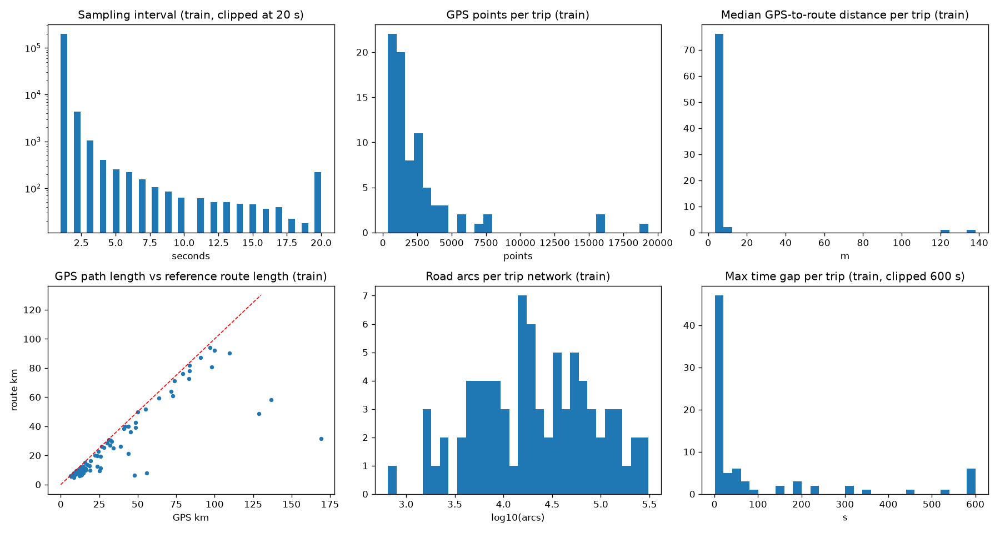
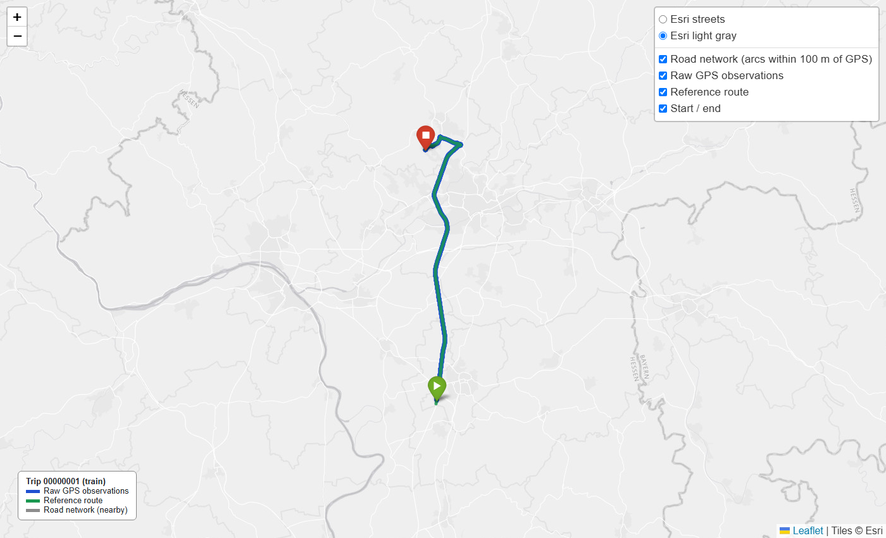
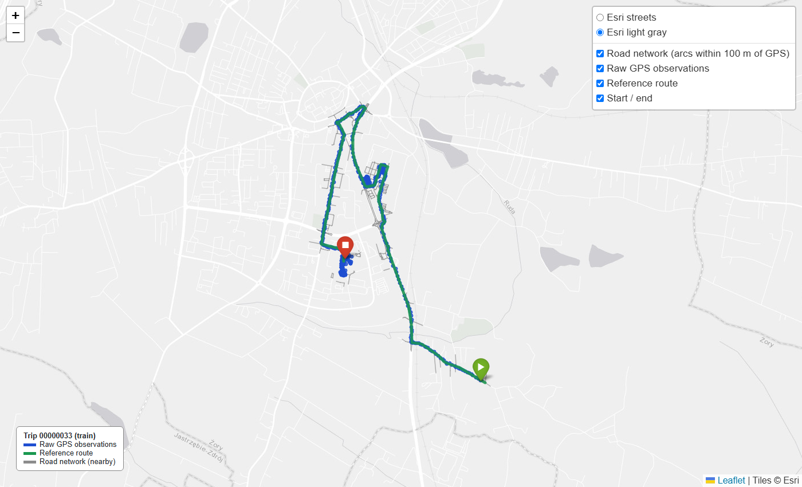
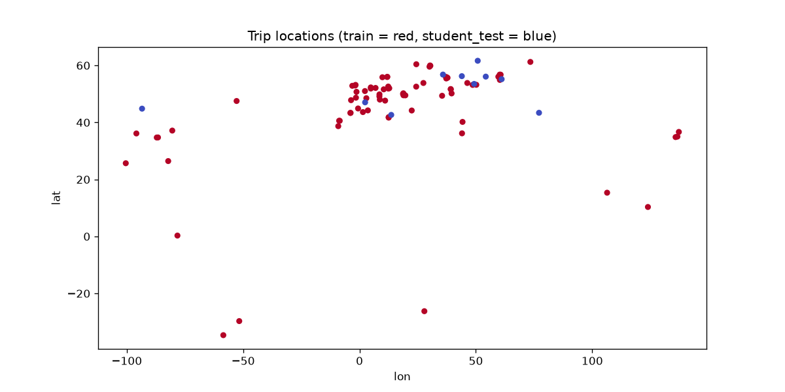
| Group | Features | Why |
|---|---|---|
| Distance | dist, dist_rank, dist_minus_min, dist_ratio | The true road is usually close, but GPS drifts, so how a candidate compares to the closest one matters as much as its raw distance. |
| Heading | head_diff, cos_head, head_rank, head_reliable | Angle between the car's direction (previous to next fix) and the arc's direction. This is the only thing that separates A→B from B→A on a two-way road. Heading is unreliable when the car barely moves, so we flag that. |
| Context | dist_prev, dist_next, win_mean_dist, win_max_dist | One noisy fix may sit nearer the wrong road, but its neighbours usually sit near the right one. |
| Motion | speed, dt_prev, dt_next | Gaps and speed change how much the other features can be trusted. |
| Geometry | t_proj, arc_len, n_cands, out_deg_to, in_deg_from | Junctions and dense areas are where mistakes happen. |
The target is binary: 1 if the candidate is the aligned reference arc, otherwise 0. Only 14.6 % of candidate rows are positive, so plain accuracy is misleading (a model answering "no" every time would score 85 %). We therefore report Macro F1 and per-fix Top-1 accuracy.
Protocol. We used 5-fold GroupKFold on the 80 train trips, grouped by trip. Fixes
from one trip are near-copies of each other, so splitting a trip across folds would leak information and
inflate the scores. Each model was then refit on all 80 trips and scored once on student_test. The seed is 42 everywhere.
Primary metric: observation-level Top-1 accuracy. For each GPS fix we take the highest-scoring candidate and check it against the reference arc. We chose it because the final route is assembled from exactly these per-fix choices, so it measures the actual task. Macro F1 and log loss come second. Log loss matters to us because the HMM uses the probabilities directly.
| Model | Family | Key configuration | CV Macro F1 | Top-1 (test) | Route continuity (test) | Test Macro F1 | Log loss (test) | Inference |
|---|---|---|---|---|---|---|---|---|
| Logistic Regression | Linear | StandardScaler, L2, C = 1 | 0.921 ± 0.024 | 0.897 | 0.923 | 0.924 | 0.108 | 0.5 µs/row |
| KNN | Instance-based | k = 25, distance-weighted, scaled, 80k-row sample | 0.928 ± 0.025 | 0.900 | 0.928 | 0.933 | 0.115 | 86 µs/row |
| Random Forest | Bagging ensemble | 200 trees, min leaf 5, sqrt features, 400k rows | 0.944 ± 0.025 | 0.914 | 0.935 | 0.947 | 0.068 | 6.2 µs/row |
| LightGBM | Boosting | 400 trees, lr 0.05, 31 leaves, subsample 0.8 | 0.944 ± 0.026 | 0.918 | 0.937 | 0.948 | 0.066 | 4.3 µs/row |
| MLP | Neural network | (64, 32) ReLU, Adam, early stopping, 400k rows | 0.940 ± 0.025 | 0.909 | 0.936 | 0.942 | 0.072 | 1.0 µs/row |
Test = the 10 student_test trips. Top-1 and continuity here are classifier-only, before any HMM. We
also tried Gaussian Naive Bayes, a single decision tree and ExtraTrees early on (they appear in
results/train_log_batch2.txt and the git history). Naive Bayes gave a log loss of 0.75 because
our features are strongly correlated, which breaks its independence assumption. The other two duplicated
families we already had, so we settled on one model per family.
For the overfitting question we also scored each model on its own training rows
(results/train_fit.csv) and compared that with CV and student_test:
| Model | Train Top-1 | CV Top-1 | Test Top-1 | Train Macro F1 | CV Macro F1 | Test Macro F1 | Train / CV / Test log loss |
|---|---|---|---|---|---|---|---|
| Logistic Regression | 0.896 | 0.897 | 0.897 | 0.922 | 0.921 | 0.924 | 0.116 / 0.118 / 0.108 |
| KNN | 0.915 | 0.898 | 0.900 | 0.938 | 0.928 | 0.933 | 0.103 / 0.128 / 0.115 |
| Random Forest | 0.934 | 0.912 | 0.914 | 0.957 | 0.944 | 0.947 | 0.056 / 0.073 / 0.068 |
| LightGBM | 0.929 | 0.912 | 0.918 | 0.954 | 0.944 | 0.948 | 0.057 / 0.072 / 0.066 |
| MLP | 0.912 | 0.908 | 0.909 | 0.943 | 0.940 | 0.942 | 0.073 / 0.079 / 0.072 |
A1. Why suitable?
It is the natural baseline for a binary "right road or not" question. It is fast, gives probabilities directly, and its coefficients show which features matter. If a linear model had been enough, there would be no reason to use anything heavier.
A2. Strengths and limitations
It trains in under 4 s and predicts in 0.5 µs per row, the fastest of all five. Its limitation showed up straight away: it can only add up weighted features, so it cannot express rules like "a close road only counts if the heading also agrees". That interaction is exactly what decides two-way roads and parallel streets.
B5. Hyperparameters
L2 penalty, C = 1.0, lbfgs solver, max_iter = 2000, with features standardised first.
B6. Loss / objective
Binary cross-entropy (log loss) with an L2 penalty on the weights.
C7-C8. Student-test performance
Top-1 0.897, Macro F1 0.924, log loss 0.108, accuracy 0.963. Confusion matrix: 13,188 true positives, 2,092 false positives and 1,835 false negatives. It had the most errors of both kinds.
C9. Over- or underfitting?
Underfitting. Train, CV and test Top-1 are all about 0.897. When a model scores no better on the data it was trained on than on new data, it is too simple, not memorising. The tree models beat it by 2 points on the same features.
A1. Why suitable?
KNN asks whether a candidate looks like candidates that were right before. That is a reasonable idea here, because correct candidates share a recognisable profile (small distance, small heading difference, close neighbours).
A2. Strengths and limitations
There is no training step and it can bend around any decision boundary. But prediction means searching the stored rows, so inference was 86 µs per row, about 20 times slower than LightGBM, and we had to subsample to 80k training rows to keep it practical. It also needs every feature on the same scale, and its probabilities (a weighted vote of 25 neighbours) are coarse.
B5. Hyperparameters
k = 25, distance weighting, Euclidean metric on standardised features, 80,000-row training sample.
B6. Loss / objective
None is optimised. KNN stores examples, and the prediction is a distance-weighted vote.
C7-C8. Student-test performance
Top-1 0.900, Macro F1 0.933, log loss 0.115 (the worst calibration of the five).
C9. Over- or underfitting?
Mild overfitting. Train Top-1 is 0.915 against 0.898 in CV. Because KNN partly "remembers" the rows it stores, it scores better on rows close to its own sample. Its CV log loss (0.128) is the worst, which is another sign that its probabilities don't carry over well to new trips.
A1. Why suitable?
Trees naturally handle threshold rules on mixed features ("distance under 6 m and heading difference under 30°"). Averaging many trees trained on random subsets gives stability.
A2. Strengths and limitations
It is very accurate (Top-1 0.914) and robust to feature scale. The cost is size and time: the saved model is 148 MB uncompressed (37 MB compressed), training took 88 s on a 400k-row sample, and inference is 6.2 µs per row.
B5. Hyperparameters
n_estimators = 200, min_samples_leaf = 5, max_features = sqrt, unlimited depth, 400k-row training sample.
B6. Loss / objective
Each tree splits to reduce Gini impurity. The forest averages the trees' class probabilities.
C7-C8. Student-test performance
Top-1 0.914, Macro F1 0.947, log loss 0.068. It had the highest precision of all five (0.951) and the fewest false positives (1,202).
C9. Over- or underfitting?
Mild overfitting. It has the largest train-to-CV gap of the five: Top-1 0.934 against 0.912, and log loss 0.056 against 0.073. That is expected with fully grown trees. The test score still matches CV, so the overfitting doesn't hurt generalisation much.
A1. Why suitable?
Boosting builds trees one after another, each fixing the mistakes of the previous ones. On tabular data of this kind (about 1M rows, 20 numeric features with interactions) it is usually the strongest choice, and it is fast enough to sit behind a live API.
A2. Strengths and limitations
It came out best on every quality metric and is fast (4.3 µs per row, 1.4 MB model). Its probabilities are well calibrated, which the HMM needs. The downside is that it has more hyperparameters than the others, which we handled with Bayesian optimisation (section 4).
B5. Hyperparameters (initial)
n_estimators = 400, learning_rate = 0.05, num_leaves = 31, subsample = 0.8 (every iteration), colsample_bytree = 0.8, min_child_samples = 20.
B6. Loss / objective
Binary log loss, minimised by gradient boosting with leaf-wise tree growth.
C7-C8. Student-test performance
Top-1 0.918, Macro F1 0.948, log loss 0.066, accuracy 0.974. Confusion matrix: 13,739 true positives, 1,408 false positives and 1,284 false negatives. The two kinds of error are balanced.
C9. Over- or underfitting?
A small, healthy gap: train Top-1 0.929, CV 0.912, test 0.918. Test agrees with CV, so it generalises. All five models rise and fall together across the folds (figure 6), so the fold-to-fold spread (±0.04) comes from how hard the trips in each fold are, not from instability in LightGBM.
A1. Why suitable?
A neural network learns combinations of features by itself, without hand-made interaction terms. It was also the only model whose training curve we could show epoch by epoch.
A2. Strengths and limitations
It is accurate (0.909) and very fast at inference (1.0 µs per row). Against that, it needs feature scaling, took 64 s to train, is sensitive to its settings, and is the hardest of the five to explain.
B5. Hyperparameters
Two hidden layers (64, 32), ReLU, Adam with learning rate 1e-3, batch 1024, L2 alpha = 1e-4, early stopping on a 10 % validation split with patience 6, max 60 epochs, 400k-row sample.
B6. Loss / objective
Binary cross-entropy (log loss) with an L2 penalty, minimised by Adam.
C7-C8. Student-test performance
Top-1 0.909, Macro F1 0.942, log loss 0.072.
C9. Over- or underfitting?
Neither to any real degree. Train, CV and test Top-1 are 0.912, 0.908 and 0.909. The training curve (figure 9) shows the loss falling from 0.200 to 0.071 while validation accuracy rose from 0.966 to 0.972. Early stopping ended training at epoch 30, before the curves could diverge.
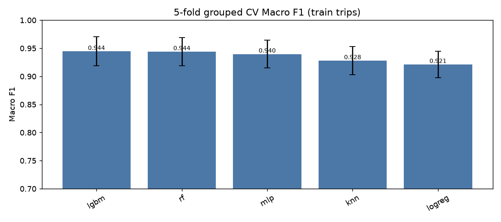
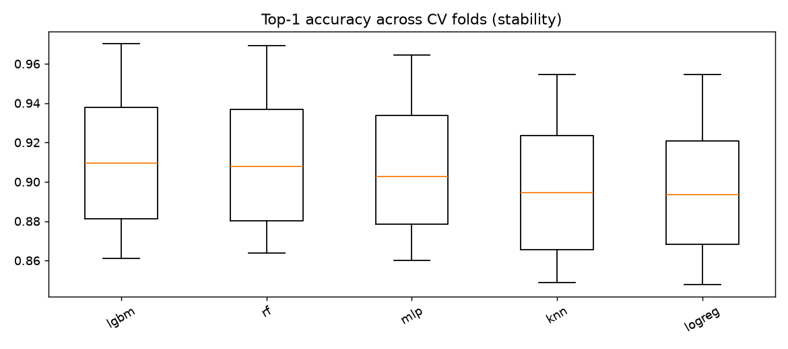
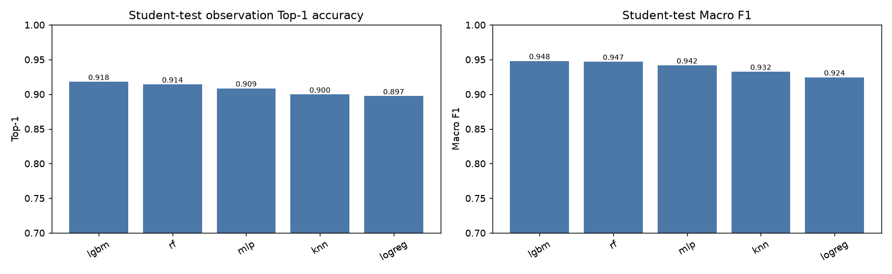
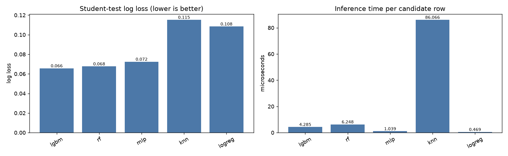
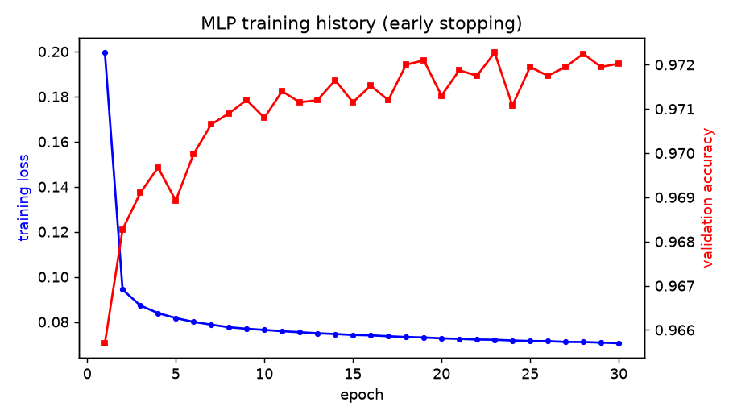
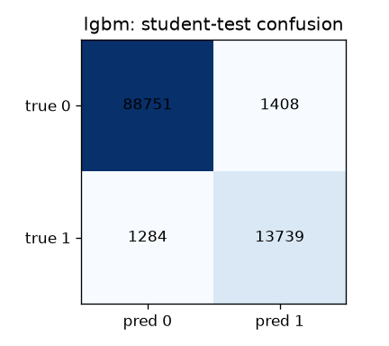
results/plots/).Selection. We chose LightGBM. It has the best Top-1, Macro F1 and log loss, generalises steadily, is quick at inference and produces probabilities the decoder can trust. Random Forest was a close second but 26 times larger on disk and slower.
1-2. Which hyperparameters, and what ranges?
| Hyperparameter | Range / distribution | Reason |
|---|---|---|
| n_estimators | int 150-900 | number of boosting rounds |
| learning_rate | log-uniform 0.01-0.2 | step size; trades off against n_estimators |
| num_leaves | int 15-255 | tree complexity |
| min_child_samples | int 10-300 | smallest leaf; controls overfitting |
| subsample | uniform 0.5-1.0 | row bagging |
| colsample_bytree | uniform 0.4-1.0 | feature bagging |
| reg_lambda, reg_alpha | log-uniform 1e-3-10 | L2 / L1 regularisation |
3. Objective
Maximise the mean observation-level Top-1 over 5-fold GroupKFold on the 80 train trips, the same primary metric we used for model selection. Student_test was used only once, after the search, to compare tuned and untuned. We used Optuna's TPE sampler (seed 42) with a median pruner, and put the untuned configuration in as trial 0 so the search could only match or beat it.
How TPE works, briefly: it splits the finished trials into a good group and a bad group, models where the hyperparameters of each group tend to fall, and proposes new settings that look more like the good group. Unlike grid or random search, every new trial uses what was learned from the earlier ones.
4. Number of trials
8 trials (1 pruned) in a 25-minute budget, 2,505 s of search. The budget was tight because the search shared the CPU with the HMM tuning.
5. Best values
n_estimators 378, learning_rate 0.048, num_leaves 119, min_child_samples 94, subsample 0.81, colsample_bytree 0.48, reg_lambda 0.015, reg_alpha 0.029. Compared with the defaults, it uses bigger trees with larger minimum leaves and sees only half the features per tree.
6. Did tuning help?
| LightGBM | CV Top-1 | CV Macro F1 | CV log loss | Test Top-1 | Test Macro F1 | Test log loss | Inference |
|---|---|---|---|---|---|---|---|
| Untuned | 0.9120 | 0.9444 | 0.0720 | 0.9179 | 0.9479 | 0.0657 | 6.2 µs/row |
| Tuned | 0.9137 | 0.9456 | 0.0700 | 0.9176 | 0.9473 | 0.0648 | 7.7 µs/row |
Only slightly. CV Top-1 went up 0.17 points and log loss improved on both CV and test, while test Top-1 stayed the same within noise. We picked the tuned model on its CV score, which was the rule we set, not on the student_test number. Our honest reading is that LightGBM's defaults were already close to the best these features allow. The big improvement came from the sequence decoder in the next section.
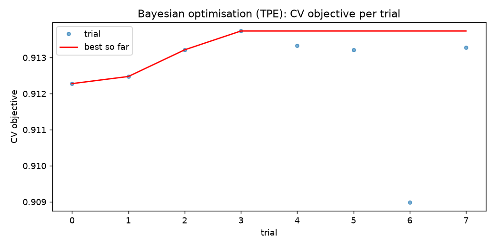
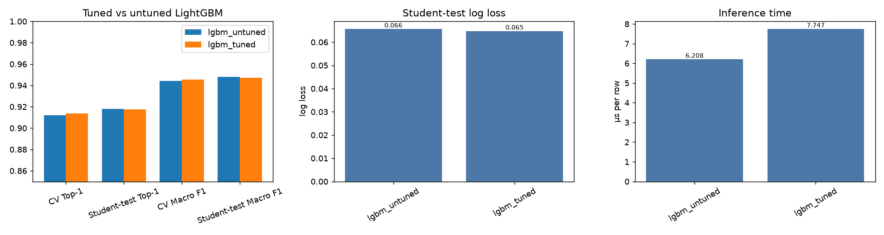
1. Hidden states
At each kept fix, the hidden states are that fix's candidate arcs, each carrying where the fix projects along it (t ∈ [0, 1]). Every state keeps its arc id, so the output is always a real road segment.
2. Emission probabilities
The LightGBM probability, renormalised over the fix's candidates and weighted: log Ei(s) = w · log(ps / Σ p). Tuning chose w = 0.5. In words, the decoder trusts the road network a little more than any single fix's classifier score.
3. Transition probabilities
We follow the Newson and Krumm (2009) idea. For consecutive fixes, take the straight-line distance between them, dgc, and the driving distance through the directed network between the two projected positions, droute (from a bounded Dijkstra search). If the car really went from one candidate to the other, the two should be about equal:
log T = -|droute - dgc| / β(Δt), β(Δt) = β + 2·(Δt - 1), β = 15 m
A detour or an impossible jump gives a large mismatch and a low score. The Viterbi recurrence is δi(s) = maxr [δi-1(r) + log T(r→s)] + log Ei(s), with back-pointers. We trace back from the best final state to read off the route.
4. Missing candidates and large GPS gaps
5. Disconnected consecutive segments
If the network has no path between two candidates (within 4×dgc + 300 m), the transition gets a large but finite penalty (-40) instead of minus infinity. A broken network therefore never makes every path impossible. In the final route, any two consecutive arcs that don't touch are joined with the shortest connecting path, so the route we return is always drivable.
Tuning the decoder without leakage. A classifier scoring the trips it was trained on is over-confident, which would distort the balance between emission and transition. So each train trip was scored by a LightGBM trained on the other four folds (out-of-fold probabilities), and the decoder was tuned on 24 of those trips. We tried a grid of β × w × a backward-movement penalty, and then extended it once we saw the best value sitting at the grid's edge. Results plateaued at about 0.953 Top-1 against 0.913 for the classifier alone (figure 13).
Something that didn't work. Most remaining errors pick the opposite-direction twin of a two-way road, so we added a penalty for moving backwards along a directed arc. On the train trips it only made things worse (best factor = 1, meaning no penalty), even when the first 5-10 m of backward jitter was free. We kept it switched off.
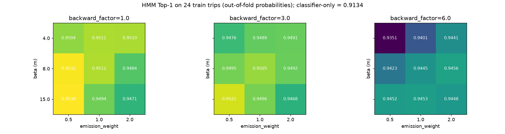
6. Did the HMM improve the route?
Yes, on every student_test trip. Final pipeline (tuned LightGBM + tuned HMM), results/final_student_test.csv:
| Trip | Fixes | Classifier Top-1 | HMM Top-1 | HMM Top-1 (decoded fixes) | Route F1 | Continuity |
|---|---|---|---|---|---|---|
| 0 | 2,503 | 0.947 | 0.960 | 0.976 | 0.995 | 0.990 |
| 7 | 1,354 | 0.920 | 0.995 | 0.996 | 0.995 | 1.000 |
| 9 | 1,049 | 0.860 | 0.922 | 0.933 | 0.980 | 1.000 |
| 40 | 2,995 | 0.936 | 0.955 | 0.971 | 1.000 | 1.000 |
| 52 | 262 | 0.958 | 1.000 | 1.000 | 0.998 | 1.000 |
| 56 | 3,958 | 0.903 | 0.971 | 0.978 | 0.984 | 0.999 |
| 65 | 768 | 0.866 | 0.928 | 0.923 | 0.995 | 1.000 |
| 76 | 1,486 | 0.892 | 0.967 | 0.972 | 0.970 | 1.000 |
| 77 | 3,911 | 0.741 | 0.811 | 0.844 | 0.992 | 1.000 |
| 91 | 874 | 0.866 | 0.933 | 0.963 | 0.987 | 1.000 |
| Mean | 0.889 | 0.944 | 0.956 | 0.990 | 0.999 |
Top-1 here is over all labelled GPS fixes; "decoded fixes" counts only the thinned fixes the decoder actually sees. Route F1 is the length-weighted overlap between the set of predicted road segments and the reference. On average the HMM adds 5.5 points of Top-1 and takes route continuity from 0.94 to 0.999. Sequence-level performance (route F1 of 0.99) is higher than per-fix accuracy, because most remaining per-fix errors are on the right street but in the wrong direction.
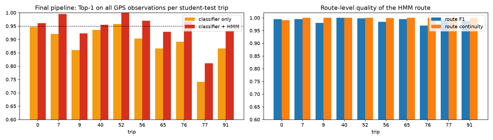
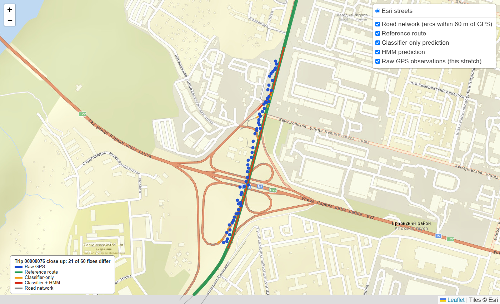
Where the HMM did not help enough. Trip 77 only reaches 0.811. 251 of its 343 errors choose the opposite-direction twin of the reference arc. It is a slow trip (about 2.5 m/s) that goes out and back along the same streets, and 29 % of the "wrong" twins we predict also appear in its reference route. The direction really is ambiguous there, in the GPS heading and in our derived labels alike. Trip 9 points the same way: in every one of its twin errors the GPS was moving 13° from our predicted direction and 167° from the reference direction, so some of these "errors" are more likely errors in the derived labels. One more note: with the first, untuned decoder settings the HMM actually made trip 7 worse (0.976 to 0.944). Tuning fixed that (0.996).
Every map is generated by our own code (pathsnap/viz.py, scripts/01_eda.py,
scripts/07_final_eval_and_maps.py, scripts/09_zoom_map.py), and the interactive HTML
files are in maps/. Each map has raw GPS (blue points), the nearby road network (grey), the
reference route (green, thick), the classifier-only route (orange dashed, can be toggled) and the HMM route
(red), along with a legend, a layer control, start and end markers, and a view fitted to the trip. We had
to use Esri base tiles, because OpenStreetMap blocks tile requests from local files and CartoDB now asks
for an API key.
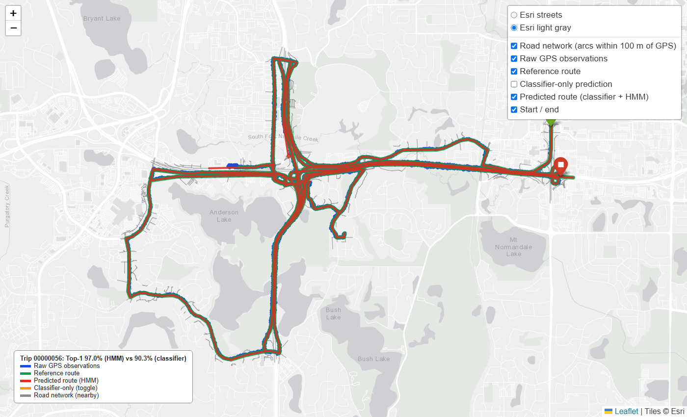
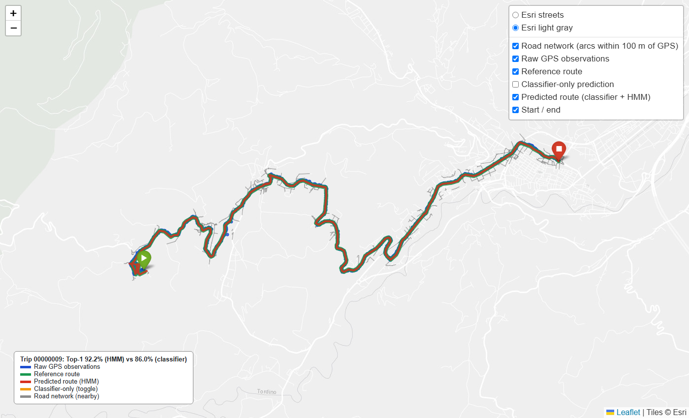
api/main.py). GET /health, GET /trips
(the trip folders in data/eval), and POST /predict {"trip_id"}. For each request
it loads the trip, builds features, runs LightGBM and Viterbi, then scores the result against the
server-side reference and returns the route geometry plus the metrics. Every request is logged.include_route=False
and an assert checks that no route is present. The .route file is read only in
score_against_reference(), after the prediction is finished. Responses contain metrics only,
never reference arcs or reference geometry.ui/index.html, Leaflet, served with python -m http.server).
It lists the trips, posts the chosen id to Laptop 1, draws the GPS, the HMM route and the classifier-only
route, and shows Top-1, route F1, precision, recall, continuity and timing.python -m uvicorn api.main:app --host 0.0.0.0 --port 8000 on Laptop 1,
python -m http.server 8501 in ui/ on Laptop 2, then point the UI at
http://<Laptop-1-IP>:8000. Full steps are in the README.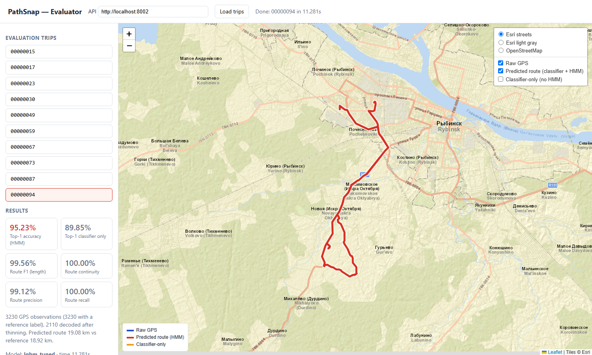
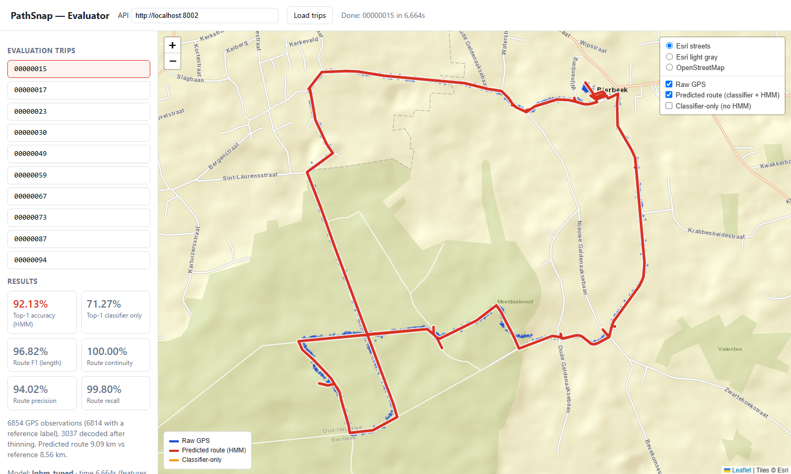
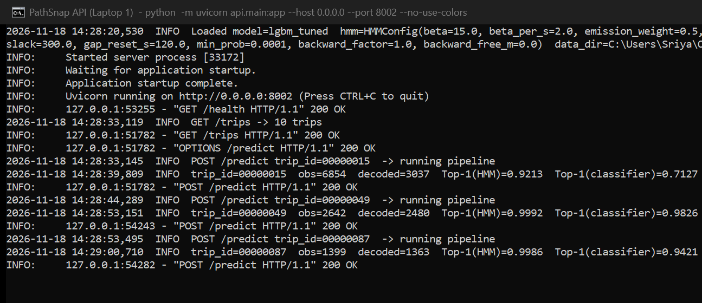
We froze the model and decoder (commit b98cdcf) before opening the evaluator trips, then ran
the frozen pipeline over them once. Nothing was changed after seeing the result, and no evaluator data or
labels are committed to the repository. The run is in results/final_eval.csv.
| Evaluator trips (10) | Classifier only | Classifier + HMM |
|---|---|---|
| Top-1, all fixes, mean over trips | 0.904 | 0.960 |
| Top-1, all fixes, pooled | 0.855 | 0.953 |
| Top-1, decoded fixes, mean over trips | 0.922 | 0.966 |
| Route F1 / route continuity | - | 0.991 / 1.000 |
| Mean time per trip | 3.6 s |
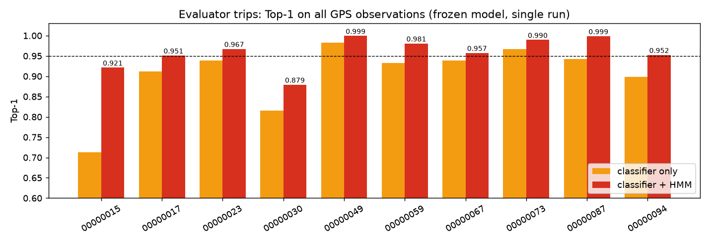
The evaluator result (0.960) is in line with student_test (0.944), so the model is not just fitting the trips we developed on.
All experiments in this report were actually run, and every number, table and plot is produced by code
in the repository (scripts/01-09) from the logs and CSV files in
results/. Evaluator trips were not used for training, feature selection, model choice or tuning.
They were run once, after freezing, as described in section 7.3.
Use of AI tools. We used an AI coding assistant (Claude) during the hackathon to help write and debug code, suggest experiment designs, and draft parts of this report. The team ran the experiments, checked the results, made the design decisions and reviewed the text, and every member can explain the code, experiments and conclusions. [Team: adjust this paragraph so it matches exactly how you used AI and what the event policy asks you to disclose.]
| Member | Main responsibility |
|---|---|
| Sriya Yashita Chandu (PES2UG24CS523) | Dataset exploration, data-quality analysis, preprocessing, label alignment, repository |
| Tarun G K (PES2UG24CS557) | Candidate generation, feature engineering, HMM / Viterbi decoder and its tuning |
| Tanmayee B G (PES2UG23CS552) | Model experiments, model comparison and selection, Bayesian optimisation |
| Srujan Yalla (PES2UG24CS527) | Results analysis, Folium maps, API / UI deployment and demonstration |
Reference: P. Newson and J. Krumm, "Hidden Markov Map Matching Through Noise and Sparseness," ACM SIGSPATIAL GIS, 2009.